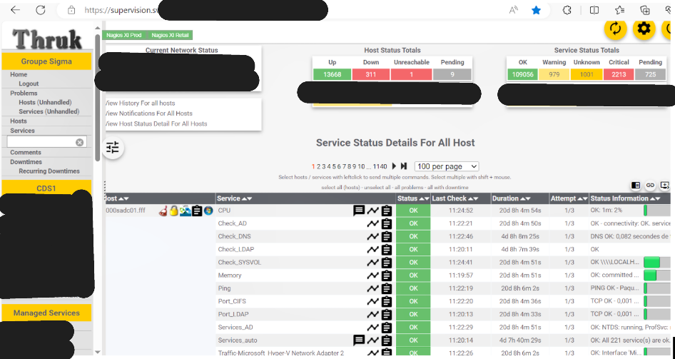

Résumé de la compétence :
Dans le cadre de mon stage au sein du groupe Sigma, j'ai eu l'opportunité de développer et d'appliquer des compétences clés liées à la gestion du patrimoine informatique de l'entreprise. Ce rapport détaille les différentes compétences mises en œuvre, accompagnées d'exemples concrets et d'analyses des méthodes utilisées pour garantir la pérennité et la sécurité des systèmes d'information.
Recenser et identifier les ressources numériques
J'ai eu l'opportunité d'observer un des datacenters de l'entreprise Sigma. J'ai également pu voir leur ESXi ainsi que leur switch et leur routeur mis en place dans leur salle des serveurs.
Exploiter des référentiels, normes et standards adoptés par le prestataire informatique
J'ai eu l'opportunité d'observer et de participer à l'application des bonnes pratiques ITIL (Information Technology Infrastructure Library) pour structurer les processus de gestion des services IT. L'objectif principal était de garantir une meilleure efficacité opérationnelle au sein de l'équipe. Un exemple de cette démarche est la structuration du processus de création des serveurs, visant à les identifier de manière optimale.

Vérifier les conditions de la continuité d’un service informatique
- - Élaboration et tests des Plans de Reprise d'Activité (PRA) afin d'assurer la continuité des services critiques en cas d'incident majeur
- - Surveillance proactive des infrastructures essentielles grâce à des outils tels que Zabbix, garantissant la détection précoce des problèmes
- - Analyse des logs système pour identifier les failles potentielles et renforcer la résilience des services offerts par Sigma
L'image de supervision ci-dessous illustre la manière dont nous assurons cette surveillance et cette gestion proactive des infrastructures.
